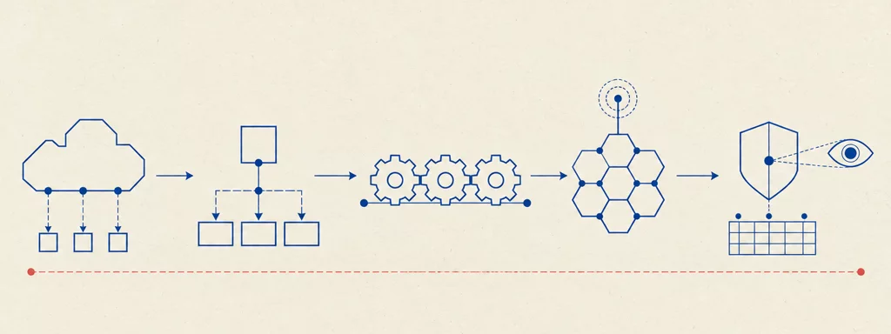

University of Bologna · Prof. F. Callegati, A. Melis, L. Rinieri · a.y. 2025/2026
Network Programmability and Automation
14 chapters70 interactive widgets69 plates~10.5 hours of study

Plate 00 — The road of the course. Network softwarisation (virtualization, SDN, containers), then the hands-on core (lab networks, the P4 data plane and its controllers), then the two applied worlds — industrial networks and mobile networks — and finally the security and monitoring layer that watches over all of it.
How to study
The chapters are in dependency order: read them from the beginning. Every chapter consolidates in one place everything the lectures said about a topic.
The plates are archival technical diagrams reconstructed from the slides: read them as figures, not decoration. The widgets (simulators, steppers, explorers) are worked implementations of the mechanisms — use them actively.
Each chapter ends with “Check your understanding”: collapsible exam-style questions with answers in the exact wording of the course.
Every chapter footer lists the lecture deck it comes from (professors' slides, lab sessions, guest lectures); sources are the official course materials, not redistributed.